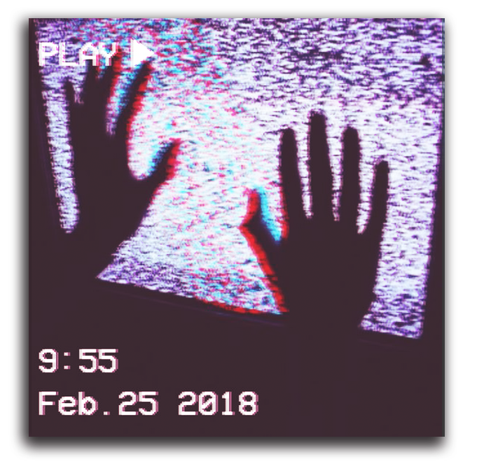
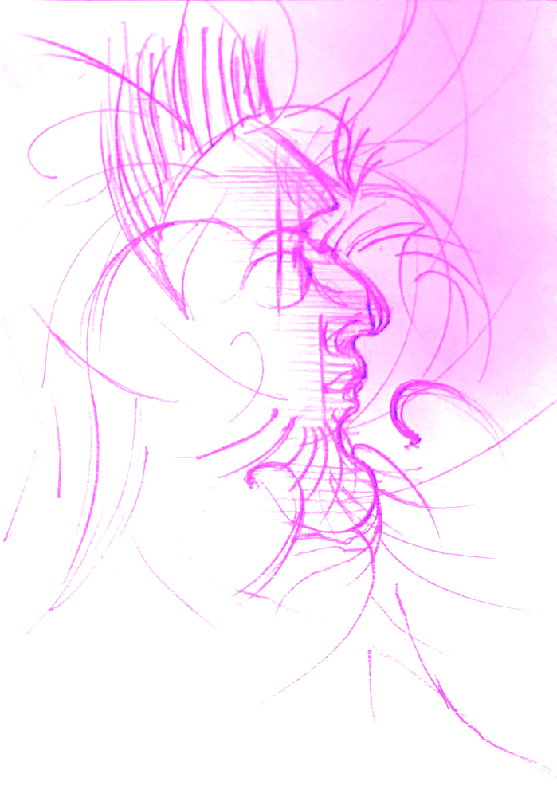

시작할 땐 마음대로였겠지만, 끝낼 땐 아니란다.
Cocaine hydrochloride (HCL)is water soluble
due to the HCL salt and can be injected;
it is also snorted in powder form. When
purchased on the street,is usually‘cut’
with adulterants such as baking soda, talcum
powder, lactose sugar, or other local
anesthetics such as lidocaine or benzocaine.
Thisincreases the weight and allows the seller
to make more. profit on the street. Other more
dangerous adulterants, such as methamphetamine
or synthetic opioids, including fentanyl, may also be
used to cut the drug. Cutting cocaine with other
illicit drugs can be especially harmful as
the user is not aware of the added
drug and an accidental overdose can occur.
Users who inject heroin will feel a euphoric surge or 'rush' as it is often called. Their mouths may become dry. They may begin to nod in and out and their arms and legs will feel heavy and rubbery. They may experience a diminished mental capacity and dulled emotions. The effects of heroin last three to four hours after each dose has been administered.In addition to the effects of the drug itself, street heroin may have additives that fail to dissolve and result in clogging the blood vessels that lead to the lungs, liver, kidneys or brain. This can cause infection or even death of small patches of cells in vital organs.
중독 사실의 부정이 첫 번째 특징이다. 안이한 인식으로 주변 마약 상습범들과 거리를 두지 않고 투약하다가 결국 중년이 되도록 스스로 망가지는 길로 빠진 줄 모르고 산다. 조 원장은 “투약자들이 치료 받을 결심을 할 적기는 수사망에 걸려 위축됐을 때인데, 우리나라에선 그때 치료 연결이 잘 되지 않고 주로 수용시설에 보내니 초기에 중독을 인정하고 치료 받으려는 환자들이 거의 없다”고 했다. 검진해서 초기에 암이 발견되면 서둘러 조치하듯 약물 중독도 인지할 기회를 빨리 주고 조치를 해야 한다는 얘기다. 심각한 ‘뇌 손상’이 두 번째 특징이다. 중독 인정 시기가 늦어질수록 끊고 싶어도 일상의 극심한 괴로움을 빌미로 또 약에 손을 뻗치게 된다. 투약하면 기분을 좋게 하는 도파민이 단번에 극도로 과다 배출되면서 일상에서 못 느낀 격한 ‘쾌감’을 맛본다. 짜릿한 첫 기억은 뇌에 각인된다. 이후 약과 관련된 자극을 접할 때마다 갈망 상태에 빠진다. 내성이 생긴다. 그럴수록 약 기운이 사라지면 일상에서 우울증, 불안증 등 괴로운 상태가 심해진다.

Touch Me!

Outside.
나갈래나갈래나갈래나갈래나갈래나갈래나갈래나갈래나갈래
“어찌 됐든 자기 ‘의지’에 달린 문제 아닙니까?”
의지
찰나의 호기심이 사랑하는 아내, 갓난아이, 배우로서의 경력을 순식간에 위험에 빠뜨렸고 대중은 싸늘하게 돌아섰다. 또 남경필 경기도지사 장남도 필로폰 투약 및 밀반입 혐의로 집행유예 4년을 받았다. 도대체 가족은 물론 친구, 직장, 건강 등 지금껏 쌓아올린 모든 것을 위태롭게 만들면서까지 이들이 마약에 빠지는 이유는 무엇일까. 필로폰 등 각성제부터 헤로인 등 아편류, 흥분제인 코카인에 이르기까지 마약의 세계에 발을 들이면 정말 `출구`는 없는 건지 과학으로 풀어본다. 마약은 뇌 신경세포(뉴런) 사이의 공간인 시냅스 등 뇌 구조와 기능에 수백 가지 변화를 일으킨다. 한 번 변형되면 복원조차 되지 않는 뇌의 `가소성`은 중독자들을 다시 약을 하고 싶은 강렬한 열망에 시달리게 한다.
헤로인, 마약 중독의 과정에 대해서 시각적으로 보여준 페이지.
lje5909@gmail.com
dljieun@instagram